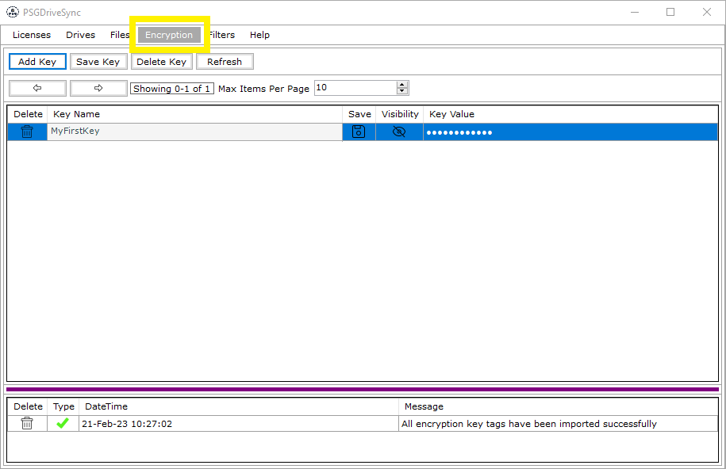

|

|
The application uses AES-256 encryption standard for not only file encryption but also for entire database encryption as well.
Here is a quote from the Wikipedia pages
on AES Encryption:
"The National Security Agency (NSA) reviewed all the AES finalists, including Rijndael, and stated that all of them were secure enough for U.S. Government non-classified data.
In June 2003, the U.S. Government announced that AES could be used to protect classified information:The design and strength of all key lengths of the AES algorithm (i.e., 128, 192 and 256)
are sufficient to protect classified information up to the SECRET level. TOP SECRET information will require use of either the 192 or 256 key lengths. The implementation of AES in products
intended to protect national security systems and/or information must be reviewed and certified by NSA prior to their acquisition and use."
Rest assured with AES-256 encryption standard, your data will remain secure as long as the security key used to encrypt the data in the first place is not compromised. To Add another layer of
protection, the application also uses HMAC-SHA256 to simultaneously verify both the data integrity and authenticity of a message. In the adverse event of your security key getting compromised,
the application will detect any change in the encrypted data even before downloading and encrypting the whole file. Doing so prevents wastage of network bandwidth and system resources. More information
on HMAC-SHA256 can be found on Wikipedia pages.
|